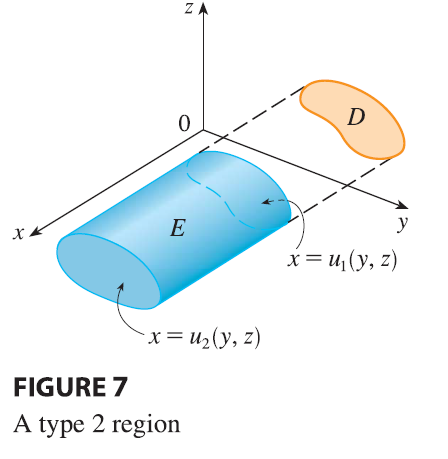

A solid region \(E\) is of type 2 if it is of the form \[ E = \{(x, y, z) | (y, z) \in D, u_1(y, z) \le x \le u_2(y, z)\} \] where, this time, \(D\) is the projection of \(E\) onto the \(yz\)-plane (see Figure 7). The back surface is \(x = u_1(y, z)\), the front surface is \(x = u_2(y, z)\), and we have \[ \iiint_E f(x, y, z) dV = \iint_D \left[ \int_{u_1(y,z)}^{u_2(y,z)} f(x, y, z) dx \right] dA \tag{10} \]